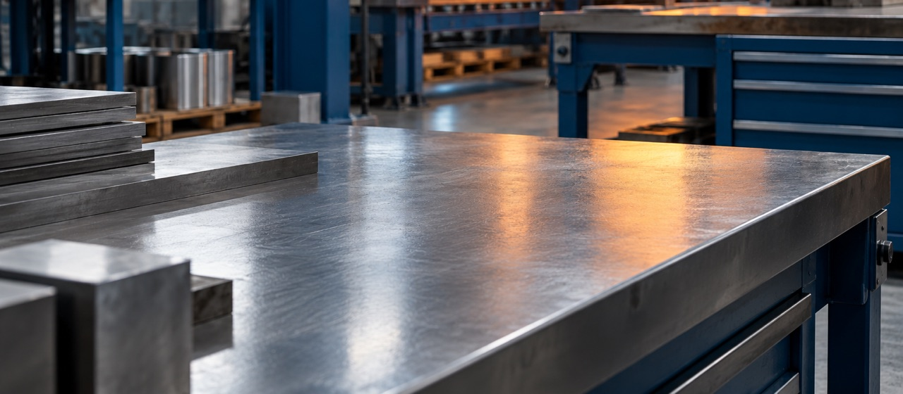
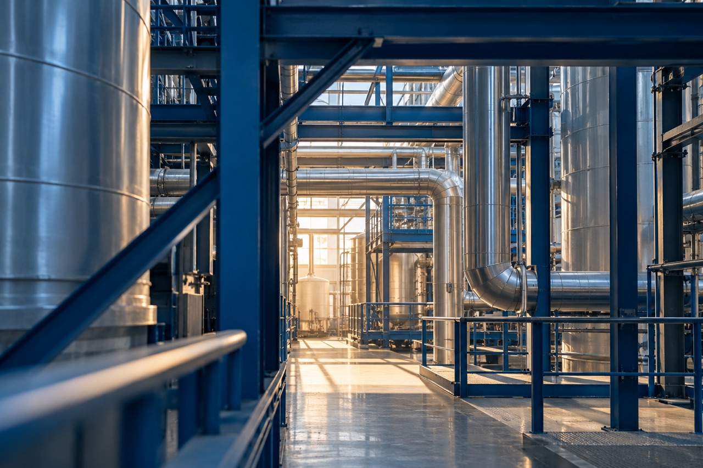
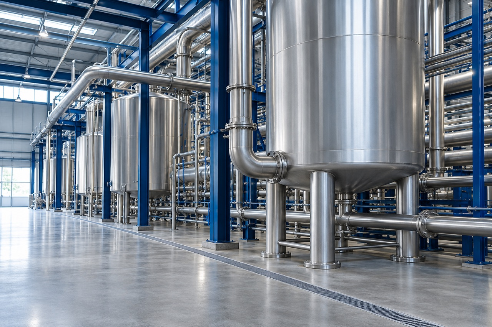
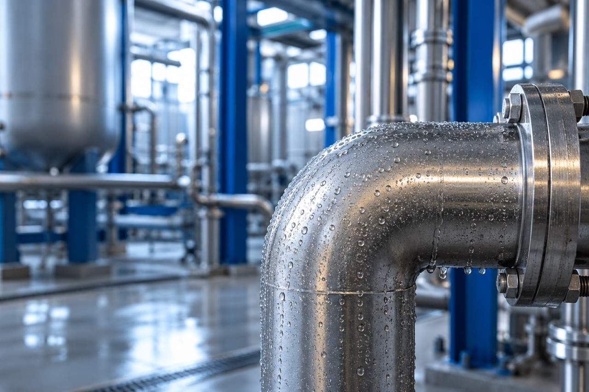
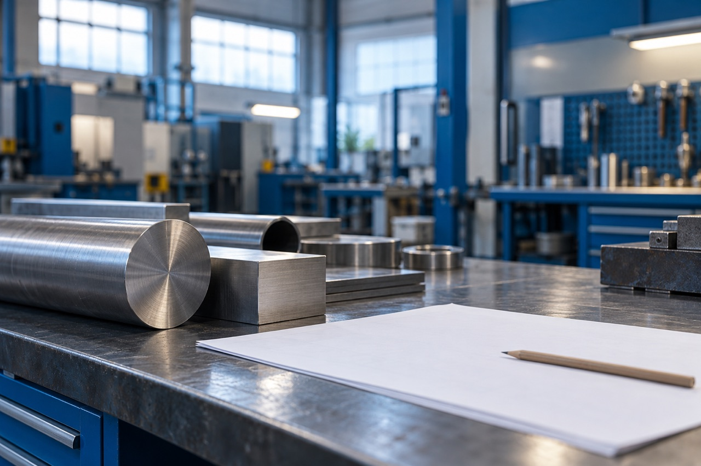
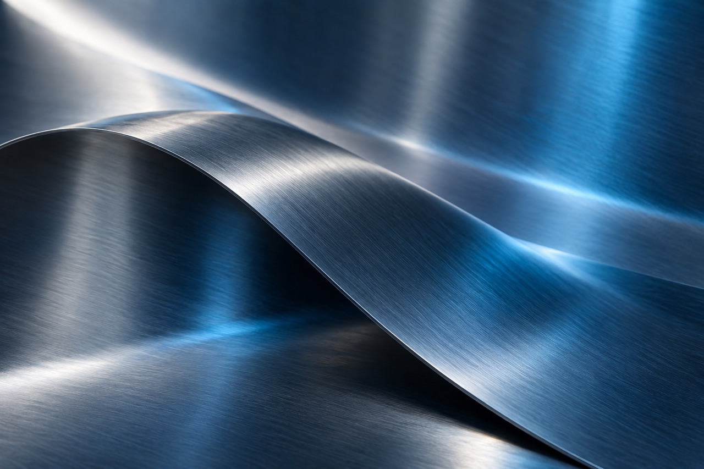
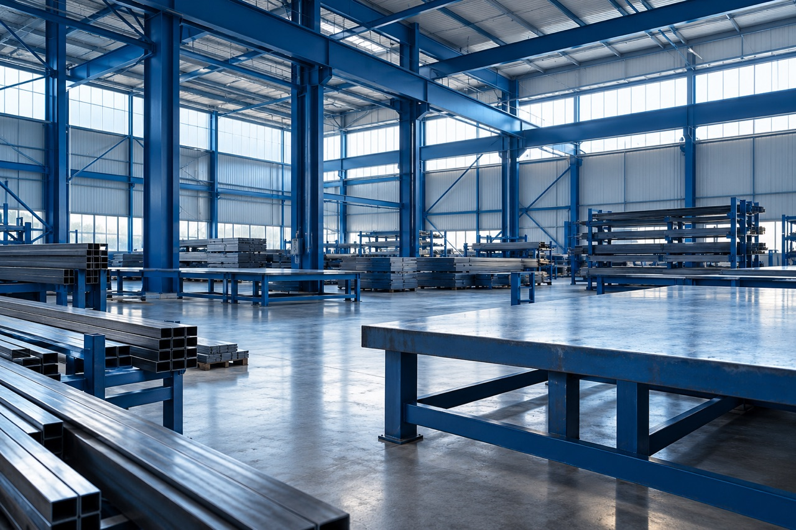

Imágenes ilustrativas. No representan productos del catálogo ni sedes reales. Los destinos indicados son propuestas; la integración en familias y Oviedo depende de la rama de Juan. Comparación de formatos y dimensiones reales, revisada a tamaño original.
Banco metálico con reflejos cálidos en un taller industrial genérico, imagen de ambiente

Revisada en resolución original; sin texto, logos ni marcas. La de resistencias se recorta para excluir la señal desenfocada del fondo.
| Medidas | JPG | WebP |
|---|---|---|
| 480 × 210 | 33331 B | 11600 B |
| 960 × 420 | 97742 B | 30090 B |
| 1280 × 560 | 151505 B | 44250 B |
Estructuras azules y tuberías metálicas en una nave de proceso genérica, imagen de ambiente

Revisada en resolución original; sin texto, logos ni marcas. La de resistencias se recorta para excluir la señal desenfocada del fondo.
| Medidas | JPG | WebP |
|---|---|---|
| 480 × 320 | 62344 B | 23824 B |
| 960 × 640 | 193858 B | 66242 B |
| 1280 × 853 | 306803 B | 96218 B |
Depósitos metálicos y tuberías en una instalación industrial genérica, imagen de ambiente

Revisada en resolución original; sin texto, logos ni marcas. La de resistencias se recorta para excluir la señal desenfocada del fondo.
| Medidas | JPG | WebP |
|---|---|---|
| 480 × 320 | 68865 B | 29704 B |
| 960 × 640 | 236940 B | 89474 B |
| 1280 × 853 | 383756 B | 134092 B |
Gotas de condensación sobre un codo metálico de tubería, imagen de ambiente

Revisada en resolución original; sin texto, logos ni marcas. La de resistencias se recorta para excluir la señal desenfocada del fondo.
| Medidas | JPG | WebP |
|---|---|---|
| 480 × 320 | 56495 B | 22490 B |
| 960 × 640 | 180029 B | 63792 B |
| 1280 × 853 | 290609 B | 95814 B |
Material metálico y papel sin anotaciones sobre una mesa de taller genérica, imagen de ambiente

Revisada en resolución original; sin texto, logos ni marcas. La de resistencias se recorta para excluir la señal desenfocada del fondo.
| Medidas | JPG | WebP |
|---|---|---|
| 480 × 320 | 46358 B | 15890 B |
| 960 × 640 | 131291 B | 37550 B |
| 1280 × 853 | 203945 B | 54904 B |
Detalle de chapa metálica con reflejos azules, imagen de ambiente

Revisada en resolución original; sin texto, logos ni marcas. La de resistencias se recorta para excluir la señal desenfocada del fondo.
| Medidas | JPG | WebP |
|---|---|---|
| 480 × 320 | 35647 B | 8768 B |
| 960 × 640 | 122158 B | 28034 B |
| 1280 × 853 | 201253 B | 44304 B |
Estructuras azules y material metálico en un taller genérico, imagen de ambiente

Revisada en resolución original sin texto, placas ni logos. Regenerada tras rechazar una primera versión con placas pequeñas en maquinaria. No representa la sede de Oviedo.
| Medidas | JPG | WebP |
|---|---|---|
| 480 × 320 | 74099 B | 31268 B |
| 960 × 640 | 244482 B | 90090 B |
| 1280 × 853 | 395587 B | 136430 B |